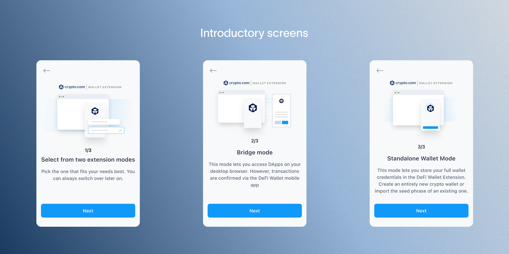
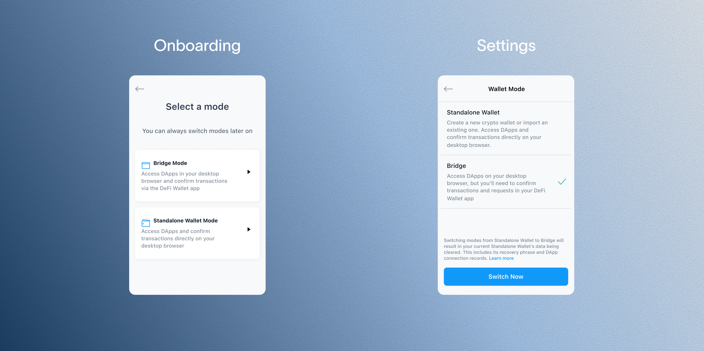
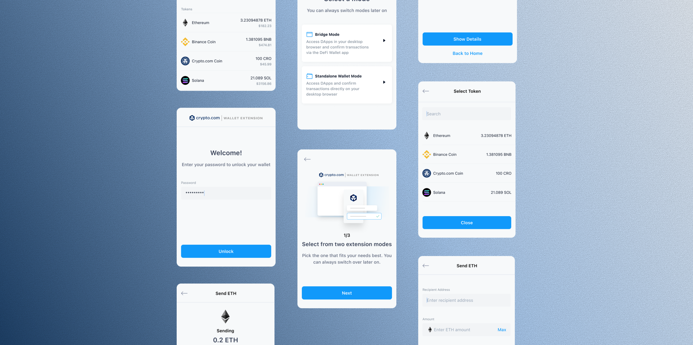

The Crypto.com Wallet Extension gives users an additional gateway to access dApps and approve transactions directly through their web browser — letting them seamlessly access the DeFi world, and store and grow crypto securely.
Given the popularity of wallet extensions in Web3, I led the design of the Crypto.com Wallet Extension as a one-stop-shop solution for DeFi users, building the essential foundation as the extension's first stage.
As the sole designer on this project, I was responsible for the overall user experience, information architecture, and visual design of the wallet — advocating for users to ensure the features implemented were both intuitive and easy to use.
Scope: Building the foundation of the wallet extension as the initial stage — essential wallet features only.

How might we introduce a new Standalone mode alongside the existing Bridge mode without confusing users already familiar with it, while building essential wallet functionality from the ground up under a tight timeline?
Due to legacy issues, the wallet extension had already been introduced via Bridge mode prior to this project — a mode that requires connecting the DeFi wallet app to approve transactions on the web. Building the MVP meant introducing a new Standalone mode alongside it, without confusing users who were already familiar with Bridge mode.
At the same time, I needed to define and build the essential wallet functionality from the ground up within a tight timeline.
After a series of quick desk research and competitive analysis, I solidified the core features to build for this initial stage:
Onboarding- 01Add wallet
- 02Import existing wallet
- 03Select modes: Bridge & Standalone mode
- 01Send tokens
- 02Receive tokens
- 01Basic settings functions
- 02Network management: edit + add new networks
- 03dApp management: browse + disconnect dApps
I benchmarked against three established wallet extensions — Phantom, Trust Wallet, and MetaMask — to confirm which features were table stakes versus where Crypto.com's dual-mode architecture introduced complexity none of them had to solve for.
| Feature | Phantom | Trust Wallet | MetaMask | Crypto.com Wallet Extension |
|---|---|---|---|---|
| Add wallet | ✅ | ✅ | ✅ | ✅ |
| Import existing wallet | ✅ | ✅ | ✅ | ✅ |
| Select modes: Bridge & Standalone | ❌ | ❌ | ❌ | ✅ |
| Send tokens | ✅ | ✅ | ✅ | ✅ |
| Receive tokens | ✅ | ✅ | ✅ | ✅ |
| Network management | ✅ | ✅ | ✅ | ✅ |
| dApp management | ✅ | ✅ | ✅ | ✅ |
The wallet extension needed to support both Bridge and Standalone modes without confusing users already familiar with the legacy Bridge experience, so I gave both modes clear, distinct naming and folded explanations into onboarding.
I developed clear and straightforward terms for the wallet modes — Bridge mode and Standalone mode — supplemented with detailed explanations of each mode, integrated into the onboarding flow as part of the introductory screens. Users are also reminded to select their preferred mode during onboarding and again in the Settings menu.
I also mapped out the onboarding flow, since introducing two distinct modes meant I needed to see how each path played out end-to-end.
The onboarding carousel walks new users through picking a mode, then explains what each one actually means before they commit — Bridge mode confirms transactions through the DeFi Wallet mobile app, while Standalone mode stores wallet credentials directly in the extension so everything happens in the browser.

That choice was never meant to be permanent, so I made sure it was just as easy to revisit later. The same mode options resurface in Settings, using consistent naming and descriptions so switching modes after onboarding feels familiar rather than like a new decision.

A look at two of the core flows in the extension: importing an existing wallet, and sending tokens.
The journey from concept to product was marked by a tight timeline, leaving me with limited research time. I had to make quick decisions and iterate rapidly, with little room to push back or explore design options for more complex features.
As the wallet extension landscape matured, my prior emphasis was on optimising the product's core functionality over onboarding simplicity.
Stats after ~3 months of launch (Jun 2022):
